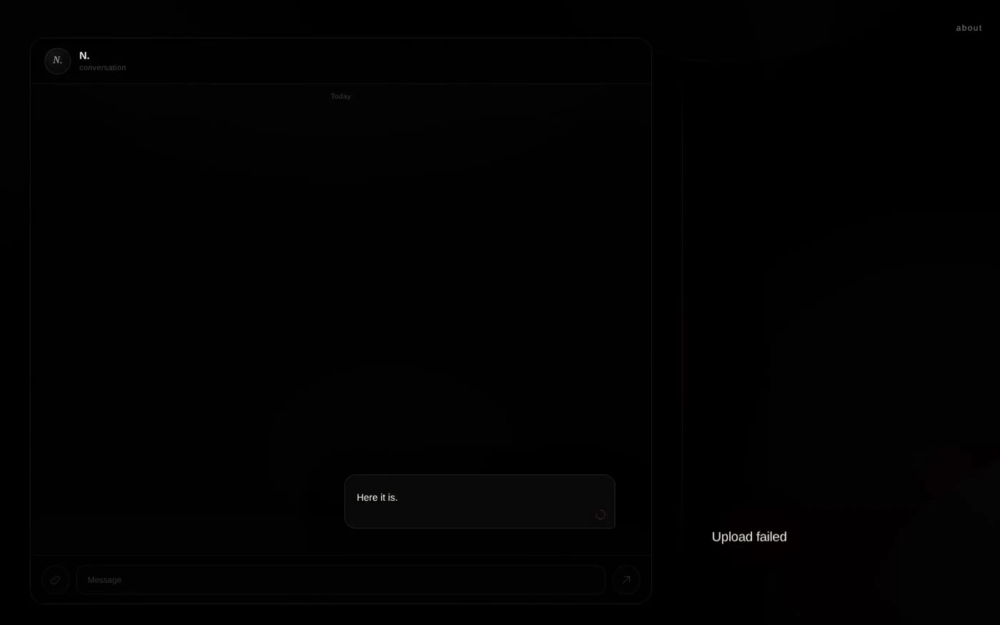
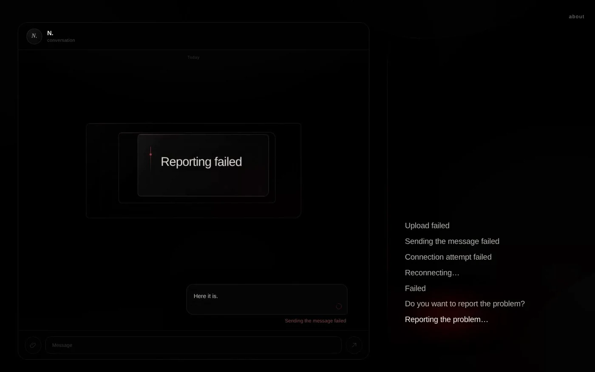

Allow one continuous interval
The work keeps its own durations.
An internet blackout poem · by Mozare · 2026
Software calls the route away from success an unhappy scenario. The phrase makes interruption sound manageable: a branch to be anticipated, named, and recovered from.

The work keeps its own durations.
The black surface is composed as one field.
No file, message, report, analytics request, cookie, or persistent storage is used.
The images keep each view inside the surface that gives it pressure. They document the work without replacing its duration.

A pale image remains close to arrival. The notice is calm enough to belong anywhere.
The ellipsis holds the promise open. Its duration becomes more legible than its assurance.

The language of accountability reaches a sentence that cannot reach its recipient.
UNHAPPY Scenario stays with that calm language after recovery has ceased to be credible. Drawn from the small notices through which systems explain failure and promise return, the poem carries their familiar English into the memory of repeated internet blackouts in Iran.
What begins as technical inconvenience becomes a vocabulary for isolation, deferred contact, and an accountability that cannot be reached. The notices keep their procedural composure; under blackout, that composure becomes one of the work’s pressures.
The title keeps the managerial calm of the phrase and the conditions it cannot contain.